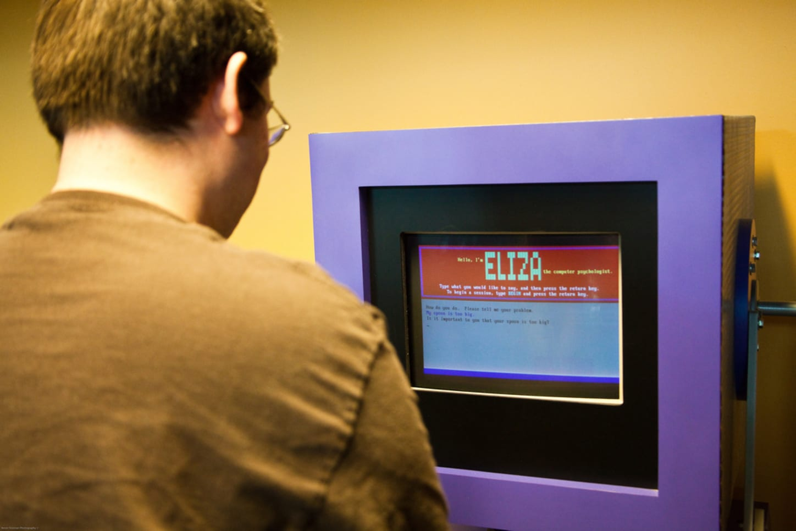
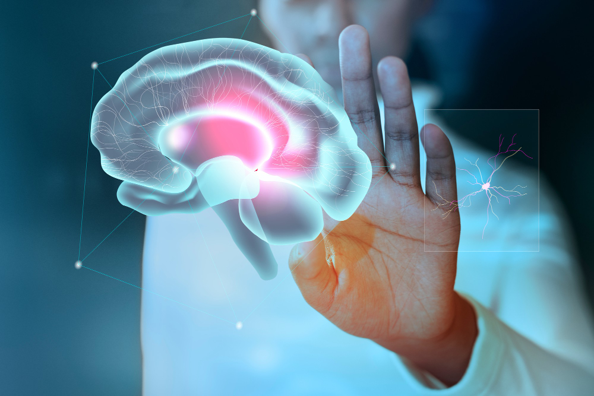

Що таке штучний інтелект?
Штучний інтелект (artificial intelligence, AI) ― це метод змусити комп’ютер чи програмне забезпечення «мислити» як людський мозок. Це досягається шляхом вивчення закономірностей роботи людського мозку та аналізу когнітивних процесів. Результатом цих досліджень є розробка інтелектуального програмного забезпечення та систем. Якщо ви коли-небудь користувалися сканером відбитків пальців, Face ID у телефоні та додатку Дія, друкували текст з допомогою Т9, спілкувалися із чат-ботом у якомусь онлайн-магазині ― ви взаємодіяли з artificial intelligence. Ще приклади штучного інтелекту: ChatGPT, голосові помічники Siri чи Alexa, система «Розумний будинок», автопілоти в машинах тощо.
 Джозеф Вайценбаум розробив першого чат-бота ― ELIZAІсторія розвитку штучного інтелекту
Народження (1952-1956)
- 1955 ― Аллен Ньюелл та Герберт Саймон створили першу програму штучного інтелекту ― Logic Theorist. Вона довела 38 із 52 математичних теорем, а також знайшла нові доведення для деяких інших.
- 1956 ― термін «штучний інтелект» вперше вжив американський інформатик Джон Маккарті на Дартмутській конференції.
Золоті роки (1956-1974)
- 1966 ― Джозеф Вайценбаум розробив першого чат-бота ― ELIZA. Його назвали на честь Елізи Дулітл, героїні п’єси «Пігмаліон» Бернарда Шоу, яку навчали мові «вищого класу людей». ELIZA імітував діалог з психотерапевтом.
- 1972 ― в Японії створено першого інтелектуального людиноподібного робота, який отримав назву WABOT-1.
Перша «зима штучного інтелекту» (1974-1980)
У цей період комп’ютерні науковці стикнулися з гострою нестачею фінансування.
Бум AI (1980-1987)
У 1980 році в Стенфордському університеті відбулася перша національна конференція Американської асоціації штучного інтелекту.
Друга «зима AI» (1987-1993)
Інвестори та уряди знову припинили фінансування досліджень у галузі artificial intelligence через високу вартість та неефективний результат.
Гаррі Каспаров проти IBM Deep BlueПоява інтелектуальних агентів (1993-2011)
- 1997 ― комп’ютер IBM Deep Blue обіграв чемпіона світу з шахів Гаррі Каспарова.
- 2002 ― вперше AI увійшов у дім у вигляді пилососа Roomba.
- 2006 ― бізнес почав використовувати технологію, зокрема компанії Facebook, Twitter та Netflix.
Deep learning, Big Data та artificial general intelligence (2011-дотепер)
- 2011 рік ― Watson від IBM переміг у вікторині Jeopardy, де йому довелося вирішувати складні загадки. Стало зрозуміло: він розуміє природну мову, швидко вирішує непрості питання.
- 2012 ― Google запустив функцію Google Now в додатку для Android, яка могла надавати користувачеві інформацію у вигляді прогнозу.
- 2020 ― Baidu випустив алгоритм LinearFold AI для медичних і науково-медичних команд, які розробляють вакцину на ранніх стадіях пандемії SARS-CoV-2 (COVID-19).
Алгоритм може передбачити послідовність РНК вірусу всього за 27 секунд. Це в 120 разів швидше, ніж інші методи.
 Нейронні мережі допомагають комп’ютерам ухвалювати розумні рішенняСкладові AI
Системи штучного інтелекту працюють, поєднуючи великі обсяги даних з інтелектуальними ітеративними алгоритмами обробки. Таке поєднання дозволяє йому вчитися на основі шаблонів і особливостей аналізованих даних. Щоразу, коли система виконує цикл обробки інформації, тестує та вимірює свою продуктивність, використовує результати для розвитку додаткової експертизи.
Без чого ШІ не існує:
- Машинне навчання (Machine learning, ML). Дає ШІ можливість навчатися. Це відбувається за допомогою алгоритмів, які виявляють закономірності та генерують інсайти на основі інформації, із якими вони стикаються.
- Глибоке навчання. Це підкатегорія machine learning, дозволяє AI імітувати нейронну мережу людського мозку. Він розпізнає закономірності, шуми та джерела плутанини в даних.
- Нейронні мережі. Deep learning часто стає можливим завдяки штучним нейронним мережам, які імітують нейрони або клітини мозку. Моделі використовують принципи математики та комп’ютерних наук, аби імітувати процеси людського мозку, що дозволяє більш загальне навчання. Нейронні мережі складаються з трьох шарів: вхідного, прихованого та вихідного. Вони містять тисячі чи мільйони вузлів. Інформація подається у вхідний шар. Вхідні дані мають певну вагу, а з’єднані між собою вузли множать вагу зв’язку, коли вони рухаються. Для того, щоб вчитися на власному досвіді, машини порівнюють результати роботи мережі, а потім змінюють зв’язки, ваги та пороги на основі відмінностей між ними.
Види штучного інтелекту
- Чисто реактивні. Ці машини не мають пам’яті чи даних для роботи, спеціалізуються лише на одній сфері діяльності. Наприклад, у шаховій грі машина спостерігає за ходами та приймає найкраще рішення, щоб перемогти.
- Обмежена пам’ять. Такі системи збирають попередні дані та продовжують додавати їх у свою пам’ять. Мають достатньо пам’яті або досвіду, аби приймати правильні рішення, при цьому їхня пам’ять мінімальна. Наприклад, така машина може запропонувати ресторан на основі зібраних відомостей про місцезнаходження людини.
- Теорія розуму. Цей тип ШІ розуміє думки та емоції, а також соціально взаємодіє.
- Самосвідомий. Самосвідомі машини ― це майбутнє покоління нових технологій. Вони будуть розумними, чутливими, свідомими.
Де його застосовують
Наразі технологія використовується в багатьох галузях, включаючи транспорт, виробництво, фінанси, охорону здоров’я, освіту, промисловість тощо.
Наприклад, системи на кшталт Google Maps, можуть аналізувати швидкість руху транспорту в будь-який момент часу, включаючи повідомлення з місця подій про дорожні інциденти: будівельні роботи або аварії.
Системи прогнозування та профілактичного обслуговування у виробничій галузі допомагають виробникам продукції уникнути дорогих простоїв, а впровадження ШІ в механізми контролю якості підвищує ефективність виробництва.
Машинне навчання допомагає фінансовим організаціям виявляти шахрайство. AI та ML також відіграють певну роль в обробці платежів, депонуванні мобільних чеків, страхуванні та наданні рекомендацій щодо варіантів інвестування
Штучний інтелект в медицині змінює спосіб взаємодії людей та лікарів. Він допомагає швидше та точніше ставити діагнози, прискорювати, спрощувати пошук ліків, контролювати пацієнтів за допомогою віртуальних помічників-медсестер.
Український стартап Esper Bionics розробив біонічний протез руки на основі технологій artificial intelligence — Esper Hand. Він робить все те, що робить справжня рука, а людина може займатися спортом та побутовими справами, працювати за комп’ютером, користуватися телефоном тощо.
ШІ в освіті змінить спосіб навчання людей різного віку. Використання artificial intelligence для ML, обробки природної мови та розпізнавання облич допомагає оцифровувати підручники, виявляти плагіат, оцінювати емоції студентів, аби визначити, кому важко, а кому нудно.
Робота штучного інтелекту потребує великих потужностей. Без хмарних технологій він би не зміг існувати.
Більше про використання технології читайте у статті штучний інтелект для бізнесу.
Майбутнє штучного інтелекту
Від самого початку AI перебуває під пильною увагою науковців та громадськості. Одна з поширених тем ― машини стануть високорозвиненими, а люди не зможуть за ними встигати, і ті почнуть розвиватися самі по собі.
Інша думка полягає в тому, що машини можуть втручатися в приватне життя людей і навіть бути використаними як зброя. Інші аргументи стосуються етики AI та чи слід надавати інтелектуальним системам такі самі права, як людям.
Ще одне спірне питання ― чи вплине технологія на зайнятість людей. Оскільки багато галузей прагнуть автоматизувати певні види робіт за допомогою інтелектуальних машин, існує побоювання, що 300 мільйонів людей будуть витіснені з ринку праці. Самокеровані автомобілі можуть усунути потребу в таксі та програмах спільного користування автомобілями, а виробники можуть легко замінити людську працю роботами. Але не треба сприймати технології як загрозу. Протягом сторіч різні професії зникали, але завжди з’являлися нові.
Також технологія може впливати на зміну клімату та екологію. В ідеалі, завдяки використанню складних датчиків, міста стануть менш перевантаженими, менш забрудненими та загалом більш придатними для життя.
Раніше ми розповідали про користь діджиталізації для бізнесу.
Повернутись на початок